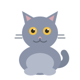
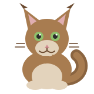
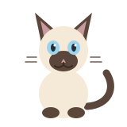

Cat Encyclopedia
Three beginner-friendly breed profiles. Each card lists the size, the
personality and the everyday care.

British Shorthair
- Size
- Medium to large. Round, solid and quite heavy for its height.
- Personality
- Calm, patient and easy-going. Friendly without being clingy.
- Everyday care
-
Brush once a week, clean the ears gently and keep meals measured
so it does not gain extra weight.

Maine Coon
- Size
- One of the largest house cats, with a long body and a bushy tail.
- Personality
- Sociable, playful and very people-focused. Often follows people around.
- Everyday care
-
Brush two or three times a week, check the ear tufts and give it
room to climb and stretch.

Siamese
- Size
- Slim and light, with long legs and a short, fine coat.
- Personality
- Talkative, curious and clever. It likes company and asks for it.
- Everyday care
-
Wipe the coat with a soft cloth, play every day and keep the room
warm because the coat is thin.